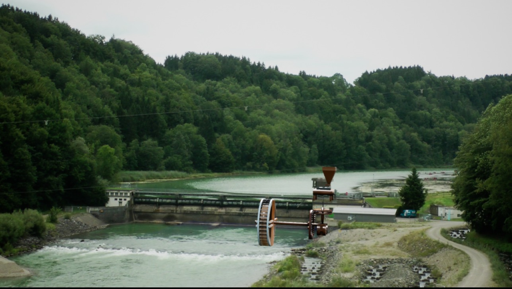

DV-Projekt
Augmented Reality an der Iller
Note: 1,0

Das Ziel unseres Projekts war auf einer Aussichtsplattform an einer Staustufe in Legau eine Augmented Reality Sicht auf die Staustufe und das Elektrizitätswerk zu realisieren. Familien, die dort mit dem Rad unterwegs sind, sollen angeregt werden, sich über den Umweltschutz und die Renaturierung des Flussbettes zu erkundigen. Hierzu sollte auf dem Aussichtsturm eine Touchscreen-Monitor und eine Kamera, welche den Staudamm zeigt, angebracht werden. Mit dem Einsatz der Unreal Engine 4 und der OpenCV Bibliothek sollten passgenau virtuelle Objekte im Bereich der Schleuse eingeblendet werden. Da der Turm sich leicht bewegt, musste eine Möglichkeit gefunden werden, wie die Objekte trotz Kamerabewegung immer auf der richtigen Stelle angezeigt werden. Da keine der Augmented Reality SDKs unseren Anforderungen entsprach, entschieden wir die speziellen Augmented Reality Algorithmen mithilfe einer Open Source Computer Vision Bibliothek, selbst zu schreiben und in die Unreal Engine zu implementieren.